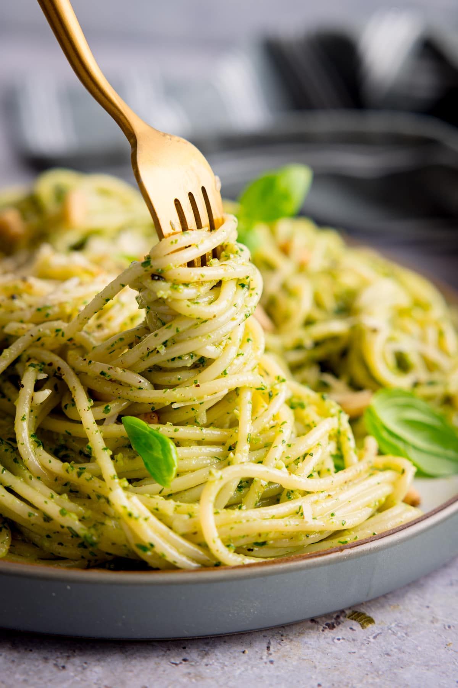

Odin Recipes
Pesto Pasta
Delicous, freshly-made pesto pasta recipe. Works as a side or main dish-- just add your favorite protein!

Ingredients
- Fresh basil
- Garlic
- Olive oil
- Pine nuts
- Parmesan
- Salt and Pepper
- Spaghetti pasta
Steps
- Cook the spaghetti until al dente. Don't drain all the pasta water.
- Pulse basil, garlic, pine nuts, grated parmesan, salt and pepper in a food processor.
- With the motor running, add olive oil and salt to taste.
- Stir in sauce, pasta water will help the sauce incorporate with pasta.
- Top off with grated parmesan.